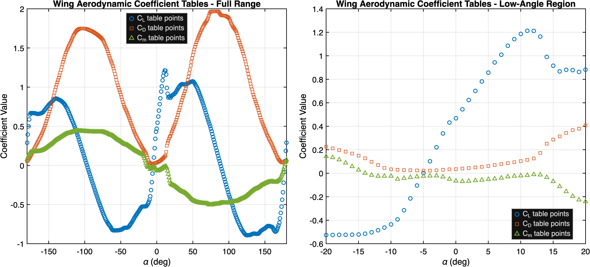
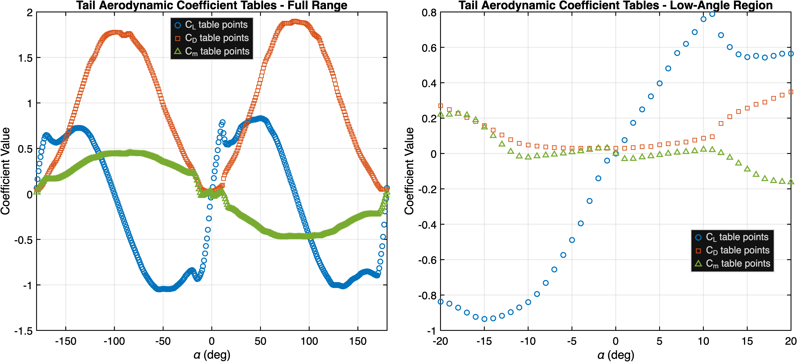

VTOL Flight Transition Simulation
Zacharias Brown
AME 532
Final Report Working Draft
Restructured Draft, April 21, 2026
Working Structure
- Problem definition and application
- Vehicle model and key assumptions
- Control design approach
- Building the transition trim map
- Trim sweep results and controller-ready data
- Control results and corridor-controller status
- Conclusion
1. Problem Definition and Application
Electric vertical takeoff and landing aircraft have drawn substantial interest because they aim to combine the operational flexibility of a helicopter with cruise performance closer to that of a fixed-wing aircraft. In the Urban Air Mobility and Advanced Air Mobility literature, this objective is framed in practical terms: short regional or urban transportation, compact takeoff and landing areas, and reduced dependence on conventional airport infrastructure. That mission profile also motivates the present project. Studying transition flight is not only a control problem but also a modeling problem, since meaningful analysis requires a workflow that connects geometry, forces and moments, trim, linearization, controller structure, and performance evaluation.
The vehicle considered here is an Archer-inspired lift+cruise eVTOL modeled with public assumptions and simplified but defensible aircraft dynamics. The objective is not to reproduce a certified aircraft exactly, but to construct a six-degree-of-freedom model that is suitable for studying transition behavior, trim, and first-pass control design.
The central technical problem is the transition between thrust-borne and wing-borne flight. During hover and low-speed flight, a lift+cruise aircraft relies primarily on rotor thrust for vertical force and maneuvering authority. As airspeed increases, the wings carry a larger share of the load, the tail contributes more strongly to stability and control, and the effect of a given control input changes across the envelope. NASA’s recent lift+cruise control work highlights this directly: in the lower-speed transition regime, pitch response is closely tied to thrust vectoring and speed change, while later in the transition it is increasingly coupled to aerodynamic lift and flight-path response.
For that reason, trim is part of the problem definition rather than a secondary implementation detail. As airspeed and front-rotor tilt change, the balance among rotor thrust, wing lift, tail forces, and aerodynamic control authority changes with them. The vehicle is also naturally over-actuated: front and rear rotor groups, tilt, and aerodynamic surfaces can all contribute to force and moment balance, but with regime-dependent effectiveness. The transition task is therefore not just to find one equilibrium or tune one controller, but to identify a feasible corridor of trimmed operating points and determine how control should be distributed as the aircraft moves from thrust-borne to wing-borne flight.
The problem addressed in this report is therefore to build a simulation framework for a contemporary lift+cruise eVTOL that is adequate for studying transition trim, control allocation, and first-pass controller design. The framework is intended to connect geometry, forces and moments, trim, linearization, and closed-loop evaluation well enough to support physically meaningful discussion of the transition problem and to show which parts of that problem are already captured by the current model and controller workflow.
2. Vehicle Model and Key Assumptions
The project is built around a Simulink aircraft model together with initialization and wrapper scripts that add commands, sensors, controller logic, trimming, linearization, and closed-loop simulation.
The vehicle itself is modeled as a lift+cruise eVTOL with an Archer-inspired layout. The current configuration
includes twelve rotors, consisting of six forward rotors mounted on tilting nacelles and six aft rotors that
remain fixed. The aerodynamic surfaces are represented as left and right wing panels and left and right V-tail
panels, so the model preserves the basic distributed geometry of the aircraft rather than collapsing the entire
airframe into a single wing and a single tail. The current mass model yields a total aircraft mass of
approximately 3040 kg, with the center of gravity and inertia matrix computed directly from the
component definitions in the vehicle model.

The project uses an Euler trim plant without the first-order actuator dynamics for operating-point search and linearization, and a quaternion run plant with the first-order actuator and rotor dynamics included for the full nonlinear simulation.
The aerodynamic model used in the current workflow is the analytical surface-based branch. Wing and V-tail loads are computed from surface geometry together with coefficient data and lookup curves built from full-angle Airfoil 360 data [2], while the distributed propulsion system contributes force and moment through the rotor locations, thrust coefficients, and reaction- torque terms. The propulsion and actuator model is grouped into front-right, front-left, rear-right, and rear-left command zones, with explicit states retained for the front tilt angles, rather than assigning independent dynamic states to every individual propeller.
The wing uses a NACA 2412 section and the tail uses a NACA 0012 section, both taken
from the Re = 100k Airfoil 360 tables [2]. These are used as local section data rather than
full-aircraft coefficients, so the aerodynamic loads are still generated by the main force-and-moment model
instead of being imposed directly from the lookup tables alone.

NACA 2412 Airfoil 360 data [2].

NACA 0012 Airfoil 360 data [2].
Overall, the model is treated as an intermediate-fidelity Archer-like lift+cruise vehicle with section-based aerodynamic lookup data and grouped propulsion/actuator states rather than a full motor-drive or CFD-based model. That level of simplification is deliberate: it is detailed enough to support trim and scheduled-control work, but still simple enough that the effect of major modeling assumptions can be interpreted.
3. Control Design Approach
The control objective is to regulate the aircraft about a sequence of feasible transition operating points rather than about one fixed equilibrium. During transition, front-rotor tilt and freestream airspeed both change, and the aircraft shifts from thrust-supported flight toward wing-supported flight. A controller designed around a single operating point is therefore not expected to remain valid across the full corridor.
3.1 Nonlinear Plant, Scheduling Variables, and Trim Map
The starting point is the nonlinear eVTOL plant
x_dot = f(x, u, ρ)
where x is the plant state, u is the control input, and the scheduling point is chosen
as
ρ = [V∞, tilt]^T
This choice is deliberate. Across hover, transition, and cruise, the dominant changes in the vehicle dynamics are strongly correlated with freestream airspeed and front-rotor tilt. A steady operating point is then defined by the trim condition
0 = f(xtrim(ρ), utrim(ρ), ρ)
so the trim map can be interpreted as a database of functions
xtrim(ρ), utrim(ρ), A(ρ), B(ρ), C(ρ), D(ρ)
evaluated over feasible operating points in the (V∞, tilt) plane. Around each trim
point, the nonlinear model is linearized as
delta_x_dot = A(ρ) delta_x + B(ρ) delta_u
delta_y = C(ρ) delta_x + D(ρ) delta_u
delta_x = x - xtrim(ρ), delta_u = u - utrim(ρ)
This is the key modeling step behind the entire control strategy. A single linearization is not expected to remain accurate across the full transition corridor, so the trim map is used to supply local linear models and trim references as the aircraft moves through the scheduled region.
3.2 Implemented Local Longitudinal LQR
The current local controller is built around each exact trim point. The active state and input sets used in the present formulation are
xlong = [θ, u, w, Q]^T
ulong = [front_coll, rear_coll, δf, δe]^T
and the associated quadratic cost is
J = integral (xlongT Qlong xlong + ulongT Rlong ulong) dt
The continuous-time algebraic Riccati equation produces the local gain matrix
Klong(ρ), giving the trim-centered law
ulong = ulong,trim(ρ) - Klong(ρ) [xlong - xlong,trim(ρ)]
In the current implementation, that command is embedded back into the full mixed-control vector
umixed = [front_coll, rear_coll, δf, δa, δe, δr]^T
while the remaining channels stay at their trim values. The present weighting matrices,
Qlong = diag([3.4, 0.45, 0.35, 0.95]) and
Rlong = diag([6.5, 20, 100, 100]), were chosen empirically as a first working set.
This should be read as the current implemented trim-point controller used for the scheduled demonstrations in
later sections.
3.3 Working Two-Point Scheduled Controller
The current runtime controller extends the local LQR in the simplest practical way: two exact trim points are
chosen, a local LQR is built at each endpoint, and the controller interpolates between the two. If the schedule
parameter is written as λ ∈ [0,1], then the working controller uses
x*(λ) = (1 - λ) x*A + λ x*B
u*(λ) = (1 - λ) u*A + λ u*B
K(λ) = (1 - λ) KA + λ KB
and then applies
u = u*(λ) - K(λ) [x - x*(λ)]
At runtime, λ is determined by projecting the commanded
(tilt, V∞) pair onto the selected transition path. This is the controller used in
the working demos later in the report. It is still narrow in scope, but it avoids hard switching between two
independent equilibrium controllers and makes the trim-to-controller handoff explicit.
3.4 Intended Extension: LPV Map, LQT, and Constrained Tracking
The natural extension of the two-point schedule is to replace the endpoint pair with a denser path or surface of controller-ready operating points. In that setting, the trim map becomes an LPV-style database that can be queried continuously in the scheduling variables. One convenient interpolation form is
A(ρ) = sum wi(ρ) Ai, B(ρ) = sum wi(ρ) Bi, sum wi(ρ) = 1
xtrim(ρ) = sum wi(ρ) xtrim,i, utrim(ρ) = sum wi(ρ) utrim,i
For trajectory tracking, the corresponding discrete-time formulation is
delta_xk+1 = A(ρk) delta_xk + B(ρk) delta_uk
delta_xk = xk - xref,k, delta_uk = uk - uref,k
and an LQT-style objective can be written as
J = sumk=0N-1 (delta_xkT Q delta_xk + delta_ukT R delta_uk) + delta_xNT Qf delta_xN
leading to the time-varying tracking law
uk = uref,k - Kk(ρk) [xk - xref,k]
A constrained predictive version would replace that pointwise law with an online optimization of the form
min delta_u0:N-1 sumk=0N-1 (delta_xkT Q delta_xk + delta_ukT R delta_uk) + delta_xNT Qf delta_xN
subject to delta_xk+1 = A(ρk) delta_xk + B(ρk) delta_uk
umin ≤ uk ≤ umax, Delta umin ≤ Delta uk ≤ Delta umax
That is the direction suggested by the trim-map architecture. However, this part of the formulation is still proposed rather than demonstrated. The project currently has working local LQRs and working two-point scheduled LQR demos, but not yet a dense LPV/LQT or LPV-MPC controller operating over the full transition corridor. The main reason is not the absence of equations; it is that the trim map is still branch-dependent and not yet dense enough everywhere to support a robust continuously scheduled controller [3].
4. Building the Transition Trim Map
Building the transition trim map turned into one of the main technical tasks of the project. The goal was not simply to collect isolated trim points, but to construct usable transition coverage from the hover-side bank toward the high-speed cruise-side branch while preserving rear-on solutions wherever possible. In practice, that meant producing points that were useful for later controller work, not just points that happened to satisfy one trim solve in isolation.
A major practical issue was solver sensitivity. In this plant, the operating-point solve was not reliable unless it was seeded close to a valid equilibrium, especially in the middle of the transition region. That behavior is consistent with the aircraft itself. Even after front tilt and airspeed are prescribed, the longitudinal channel remains strongly overactuated because pitch attitude, front collective, rear collective, flaperon, and elevator can all share the force and moment balance. Allowing too many variables to move at once made it easy for the solver to drift toward poor branches or stall near nonphysical solutions rather than converge cleanly. For that reason, the trim search was organized around restricted trim families instead of one universal solve.
The hardest part of the map was roughly 30–40 m/s and 60–80 deg front tilt, where
neighboring seeds could still converge to very different thrust splits, attitudes, and surface allocations. Once
the broad sweeps stalled there, the search became local: scored seeds were built from nearby successful points
and from simple force-balance estimates, then narrow patch scans and single-airspeed basin scans were used to
probe the region directly.
That local approach was the first one that repeatedly produced usable footholds in the middle corridor, including
40 / 67.5 exact, 42.5 / 72.5 exact, 45 / 70 exact, and then a cleaner
rear-on branch at 47.5 m/s spanning multiple tilt values. The important point is not the individual
numbers themselves, but that this region could only be repaired step by step and remained the hardest place in
the map to find valid trim points consistently.
5. Trim Sweep Results and Controller-Ready Data
The trim campaign did not produce a uniformly filled transition map, but it did produce a large and usable
transition data product. The main result is that the hard regions are now characterized, the successful basins
are known, and a controller-ready subset has been extracted from that search history. In total, the search
recorded 4062 raw trim attempts and produced 725 exact linearized controller-facing
points. Reaching that point required more than brute-force sweeping; the later runs depended on the enhanced
seeding strategy developed in Section 4, including nearby-solution seeding and a low-speed force-balance seed
that estimated thrust split and pitch before the trim solve. That is the main payoff of the sweep effort.
5.1 Coverage and the Hard Basin
Figure 3 shows the consolidated transition trim coverage in (Vinf, tilt) space. The important point
is not that every point in the rectangle is solved, but that the successful regions and the difficult regions are
now visible. The low-speed bank is comparatively strong, the high-speed bank is nearly complete, and the middle
transition basin is clearly the bottleneck. Coverage by airspeed band makes that especially clear:
30–40 m/s is by far the weakest band, with only 11 acceptable-or-better best-unique
points out of 64. By contrast, the 50–60 m/s and 60–80 m/s bands are
comparatively healthy.

(Vinf, tilt) space. The gray cloud shows
all attempted operating points, while the classified overlay shows the best representative result at each
location. This figure is the clearest summary of where the trim campaign succeeded and where the middle
transition basin remained difficult.
That middle region did not fail randomly. It repeatedly split into competing propeller basins, including high-front / low-rear RPM branches, low-front / high-rear RPM branches, and a narrower branch that kept the rear propeller RPMs meaningfully on. This is consistent with the earlier discussion of the transition corridor: the difficult part of the map is also the part where the aircraft is hardest to trim and likely least well behaved dynamically. Broad guide curves and broad corridor sweeps were useful early on, but they were not sufficient to stay in one usable branch through that gap.

5.2 Implementation Feasibility for Control
The practical question is not only whether trim points exist, but whether they are usable in a controller. In
the difficult 40–47.5 m/s region, some candidate points kept the rear propeller RPMs up longer and
appeared closer to a workable transition path, but several of those points still carried awkward pitch attitudes,
high surface deflections, or thrust allocations that left little controller margin. So even when the search
produced mathematically acceptable points in the middle corridor, those points did not automatically become good
controller waypoints.
That leads directly to the control-design problem. In the difficult middle region, the controller either has to jump across the gap between usable trim branches or rely on points that are not truly trimmed. Jumping across the gap means using trim points that are far from the actual state, so the local linear model and feedback law become less trustworthy. Using non-trim points avoids that jump, but it introduces a built-in force and moment residual that the controller was never designed around. That is why the branch-level scheduled demos in the next section are useful, but also why a full trim-map-based transition controller remains difficult.
6. Control Results and Corridor-Controller Status
6.1 Local Trim-Point Control
At the individual operating-point level, the local LQR formulation worked as intended around exact trim points. For brevity, those local hold results are not plotted here; they were primarily used as the building block for the scheduled controllers that follow.
6.2 Two-Point Scheduled Control
The first closed-loop transition result was the two-point scheduled controller described in Section 3. The
runtime controller is built from two exact endpoint trims and interpolates x*(s), u*(s),
and K(s) between them inside the nonlinear wrapper model.
| Demo case | Endpoints | Purpose |
|---|---|---|
Mid45_to_Cruise90_Rear500 |
(45 deg, 75 m/s) -> (90 deg, 75 m/s) |
Constant-speed branch between two exact trims. |
Bridge30V60_to_Cruise90V75_Rear500 |
(30 deg, 60 m/s) -> (90 deg, 75 m/s) |
More demanding branch with simultaneous tilt and airspeed change. |
The cleaner of the two cases was the 45 deg -> 90 deg transition at roughly constant
75 m/s, which showed that once two exact trims are available on a coherent branch, the scheduled
LQR can move between them without a hard controller switch. The more informative case was the bridge demo from
(30 deg, 60 m/s) to (90 deg, 75 m/s). In that run, airspeed rose smoothly from
60 to 75 m/s, front tilt tracked the commanded
30 deg -> 90 deg profile, and the commanded front collective reduction was followed closely by the
actual rotor states. The maneuver remained bounded, but it still showed a noticeable pitch transient and
nonzero altitude error.

(30 deg, 60 m/s) to
(90 deg, 75 m/s). The maneuver remains bounded and reaches the cruise-side endpoint, but still
exhibits a noticeable pitch transient and nonzero altitude error.

These results show that the trim map is already rich enough to support exact-endpoint controller construction, two-point gain interpolation, and successful nonlinear execution on selected branches. What they do not show is full-corridor control over the entire transition map.
6.3 Corridor-Controller Iteration and Current Status
The next step was to move from two-point scheduling to a denser corridor controller built from the
controller-facing trim database. That database could not be treated as a clean interpolation surface, because
many (Vinf, tilt) coordinates still contained multiple exact candidates from different trim
branches. So the problem became path selection first: choose one ordered sequence of exact points, then build a
local LQR at each point and schedule x*(s), u*(s), and K(s) along that
sequence inside the wrapper controller branch.
The main difficulty was waypoint quality. Many exact points at similar (Vinf, tilt) coordinates
were still poor control waypoints because of large pitch attitude, surface-heavy trim allocation, or early loss
of rear thrust. The path selector therefore used a hand-built guide corridor together with penalties on large
step changes in thrust, controls, and pitch attitude, plus logic to avoid dropping rear propeller RPM too early.
The goal was not to find the best point at each trim coordinate independently, but to extract one smooth path
through the exact-trim cloud that still looked usable in the nonlinear simulation.

(Vinf, tilt) plane and the red points are the selected waypoints used to build the
multi-point controller.
The runtime scheduler also had to be changed. A purely time-based progression moved on even when the aircraft had not yet settled near the current waypoint, so later versions held the active point until the measured longitudinal state was close enough before advancing. In parallel, stronger prop-biased LQR tunings were tested so that the controller would preserve thrust support deeper into the corridor. Those changes materially improved the behavior and made the remaining failures easier to diagnose.
The best current result came from the high-bridge route combined with the strongest prop-biased LQR and the gated scheduler. That run moves successfully through much of the corridor and reaches the late middle region before the final mismatch appears. The remaining issue is now branch quality rather than basic controller integration: the selected late-stage waypoint sequence still does not line up cleanly with the quasi-steady states the aircraft actually reaches, so the controls do not fully relax back to the corresponding trim values even though the response stays bounded.
In the best late-stage runs, the vehicle moves through most of the corridor but does not settle cleanly onto the final waypoint. The actuator states remain active enough that the scheduler does not admit the next advance, and the response instead stays in a bounded but visibly stressed condition. The main issue is that some adjacent waypoints still require substantially different trim control deflections and thrust splits while offering weak local control authority. When the controller moves between such distant local linearizations, the aircraft can drift out of the region where either trim-based model is a good approximation, so the corrective commands grow, the actuators approach saturation, and the response becomes much easier to destabilize in the middle-to-late transition region.
7. Conclusion
This project produced an intermediate-fidelity lift+cruise eVTOL simulation that is usable for transition trim and controller studies. The main technical work was not only in building the nonlinear model, but in constructing a transition trim database that could support controller design. That effort identified a hard middle basin, developed basin-aware sweep and seeding methods, and produced both a consolidated trim map and a controller-ready exact-trim database.
The operating-point map is one of the clearest results of the project. Hover and cruise contain broad regions of steady, usable trim, but the middle transition corridor does not. In that region, valid operating points become sparse, branch-sensitive, and often poor controller waypoints even when exact trims exist. Exact endpoint trims were still enough to support working two-point scheduled LQR demos in the full nonlinear wrapper model, but extending that control deeper into the corridor remained limited by weak local authority and by large differences between neighboring trim points.
The project also points to a broader design lesson. Transition control is not only a controller-design problem; it is also a model and configuration problem. If the vehicle model remains difficult to control through the middle corridor, later versions of the project should iterate on the assumed design as well as the controller. One clear candidate is increased control-surface effectiveness, since many of the difficult transition points demanded large surface deflections while still offering limited local authority. The control work also suggests that exact trim existence by itself is not a strong enough criterion for path construction, because some exact points are still poor waypoints once the vehicle begins moving between local models. If that remains true, then later versions should look beyond purely trim-interpolated linear control and test more nonlinear ideas, such as feedback linearization or other nonlinear tracking laws, to cancel part of the corridor dynamics directly rather than relying only on local linear approximations.
References
- Whiteside, S., Pollard, B., Antcliff, K., Zawodny, N., Fei, X., Silva, C., and Medina, G., NASA/TM-20210017971, 2021.
- Airfoil 360 v2022: Wind Tunnel Data, Mendeley Data, doi:10.17632/dz4bv26ncd.1.
- Alcalá, E., Puig, V., and Quevedo, J., “LPV-MPC Control for Autonomous Vehicles,” IFAC-PapersOnLine, Vol. 52, No. 28, 2019, pp. 106-113.